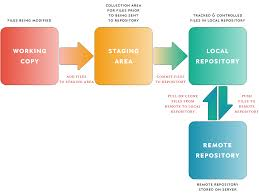
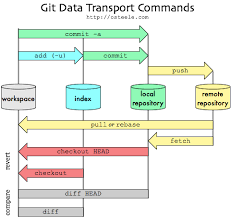
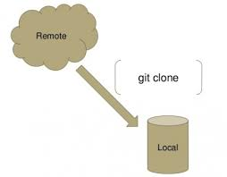
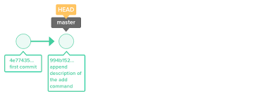

What is “version control”, and why should you care? Version control is a system that records changes to a file or set of files over time so that you can recall specific versions later. For the examples in this book, you will use software source code as the files being version controlled, though in reality you can do this with nearly any type of file on a computer.If you are a graphic or web de- signer and want to keep every version of an image or layout (which you would certainly want to), a Version Control System (VCS) is a very wise thing to use. It allows you to revert selected files back to a previous state, revert the entire project back to a previous state, compare changes over time, see who last modified something that might be causing a problem, who introduced an issue and when, and more.
Git is an important part of daily programming (especially if you're working with a team) and is widely used in the software industry.Since there are many various commands you can use, mastering Git takes time. But some commands are used more frequent ly (some daily).some commands are as follows:

The Git status command gives us all the necessary information about current branch.
We can gather information like:
Git clone is a command for downloading existing source code from a remote repository (like Github, for example). In other words, Git clone basically makes an identical copy of the latest version of a project in a repository and saves it to your computer. There are a couple of ways to download the source code, but mostly I prefer the clone with https way:
The "commit" command is used to save your changes to the local repository. Note tha t you have to explicitly tell Git which changes you want to include in a commit before running the "git commit" command. This means that a file won't be automatically included in the next commit just because it was changed.
